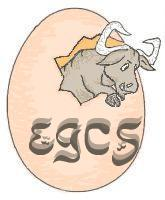

About
Mission Statement Docs
FAQ Development
Contributing BugsDownload
Releases
|

Welcome to the GCC home page!In April 1999, the egcs steering committee was appointed by the FSF as the official GNU maintainer for GCC. At that time GCC was renamed from the "GNU C Compiler" to the "GNU Compiler Collection". As a result of those changes the project has a new mission statement which more accurately reflects the fundamental goals of the project. We want to work closely with contributors to help and encourage them to submit their changes for inclusion in GCC. We thus provide access to our development sources with weekly snapshots and anonymous CVS. All code continues to be assigned to the FSF exactly as before. We will provide regular, high quality releases. We want those releases to work well on a variety of native (including GNU/Linux) and cross targets and use an extensive test suite as well as a benchmark suite to maintain and improve quality. GCC 2.95.2 is the current release. News/Announcements
Fortran news |